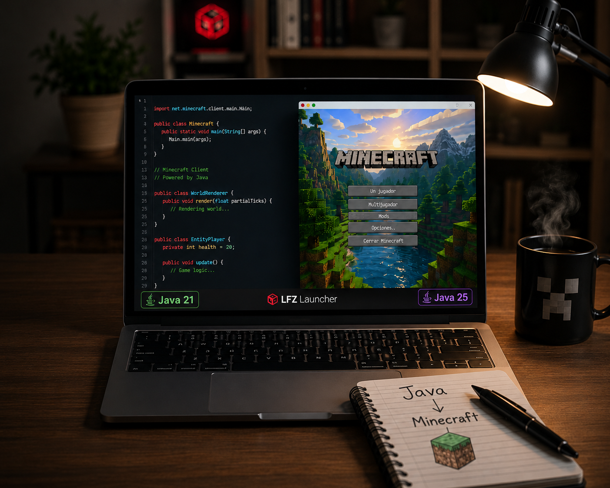

Java 21 vs Java 25: ¿Cuál usar para Minecraft?

Minecraft está escrito en el lenguaje de programación Java. Para que el juego funcione, tu computadora necesita tener instalado el entorno de ejecución de Java (JRE/JDK). Sin embargo, con las recientes actualizaciones del juego, la versión de Java que elijas tiene un impacto inmenso en el rendimiento, el consumo de RAM y la compatibilidad de los mods.
El estándar actual: Java 21 LTS
A partir de la versión 1.20.5 de Minecraft, Mojang tomó la decisión de actualizar los requerimientos del motor del juego a Java 21. Esta fue una actualización técnica masiva que dejó atrás al antiguo Java 17.
- Ventajas de Java 21: Es una versión LTS (Long Term Support), lo que significa que es la versión más estable y recomendada para jugar cualquier versión desde la 1.20.5 en adelante. El recolector de basura (Garbage Collector) de Java 21, especialmente el ZGC, maneja la memoria RAM de forma magistral reduciendo los pequeños "tirones" al cargar el mundo.
La vanguardia: Java 25 para Snapshots
Si eres un jugador aventurero que disfruta probando las últimas "Snapshots" experimentales de Minecraft, es posible que necesites dar el salto a Java 25.
- Ventajas de Java 25: Contiene las últimas mejoras de rendimiento a nivel de código máquina y CPU. Sin embargo, no es una versión LTS. Usar Java 25 puede hacer que tu juego vuele en FPS, pero algunos mods antiguos podrían no funcionar correctamente debido a cambios internos en la máquina virtual.
La ventaja de usar LFZ Launcher
El mayor problema para un jugador común es tener que estar desinstalando e instalando diferentes versiones de Java manualmente, configurando las rutas de entorno en Windows. LFZ Launcher soluciona esto de raíz.
El launcher detecta automáticamente qué versión de Minecraft vas a jugar, descarga la versión exacta de Java requerida (sea 21 o 25) y la aísla en una carpeta propia, sin afectar tu computadora ni requerir instalaciones molestas.